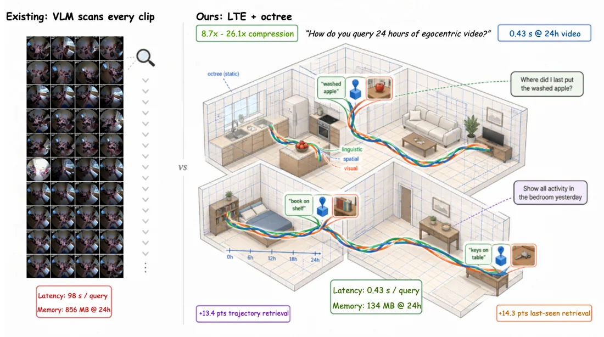
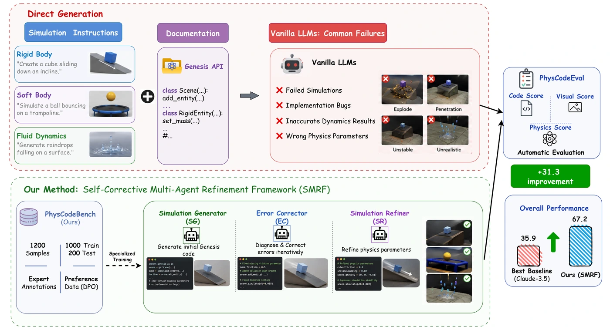
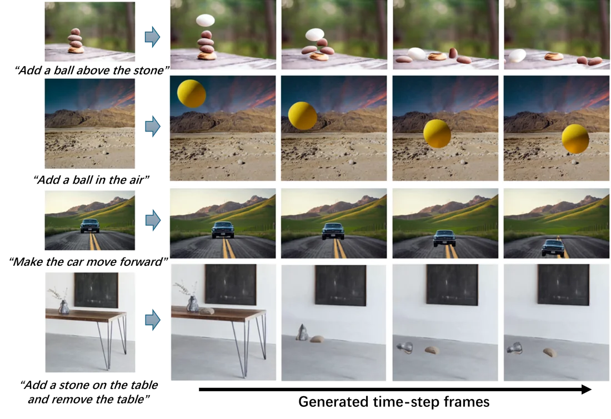
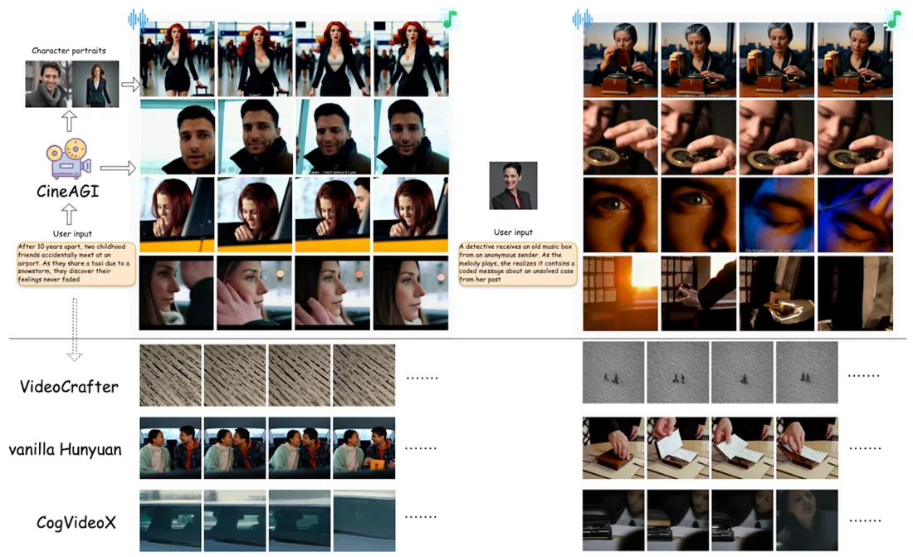
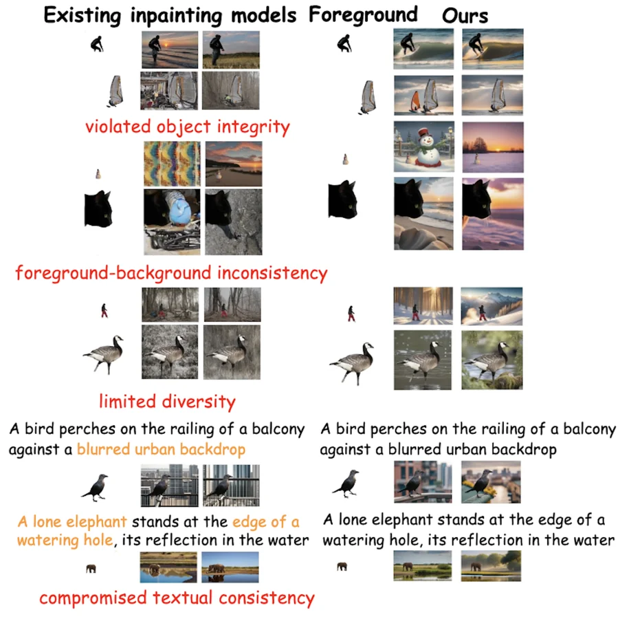
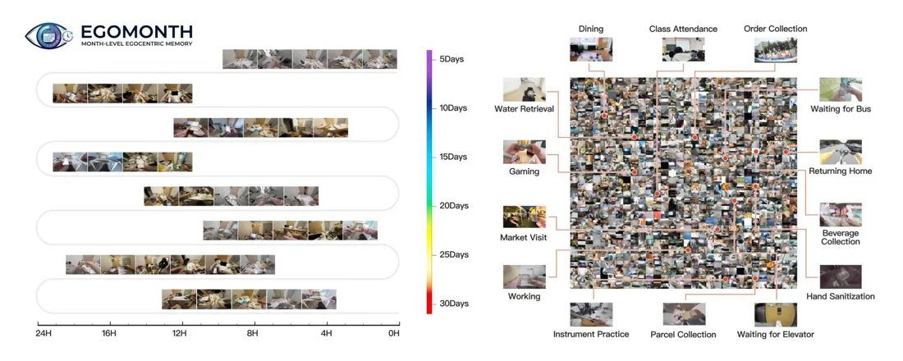

Linguistic Trajectory Encoding for Efficient Long-Horizon Spatial Memory in Embodied Agents
Object-centric memory that connects language, 3D space, and visual evidence for retrieval across hours of experience.
PhD student Nanjing University
谢天异丹 Sealical
Multimodal AI that can
generate, reason, and remember.
I'm a PhD student at Nanjing University, studying multimodal generation, agents, and spatial memory.
Previously at Skywork AI / Kunlun Tech, I contributed to UniPic, R1V, and Matrix-Game.
01 / Selected work

Object-centric memory that connects language, 3D space, and visual evidence for retrieval across hours of experience.

A physics simulation benchmark and a self-correcting, three-agent framework for executable, physically grounded code.

Bringing still images to life through language-guided, depth-aware physical simulation.

Multi-agent orchestration for coherent movie creation, with consistent characters and synchronized audio and video.

VLM, LLM, and image-generation agents collaborate to create reliable and diverse backgrounds around a given foreground.

Evaluating whether multimodal models can maintain spatiotemporal memory across weeks of everyday experience.
02 / Research in industry
Core contributions at Skywork AI
Kunlun Tech · 2025–2026
I contributed to UniPic 1.0 and 2.0, unifying image understanding, generation, and editing through autoregressive modeling and reinforcement learning.
One model. Multiple visual capabilities.
I contributed to the R1V series, including R1V2's hybrid reinforcement learning and R1V4-Lite's interleaved visual reasoning, image operations, and multimodal search.
Think with images. Act with tools.
I contributed to real-time world generation with camera-aware memory, supporting spatial and temporal consistency across long interactive sequences.
5B parameters · 720p · up to 40 FPS
03 / Background
Large Model Researcher
Core contributor · UniPic, R1V & Matrix-Game
Research Assistant
NLP Algorithm Engineer
NLP Algorithm Engineer · Intern
Master's · Big Data Management · 2019–2022
Southwestern
University of Finance and Economics
Bachelor's · Information Security · 2015–2019
Southwest
University of Science and Technology
Keep in touch
Multimodal intelligence, visual worlds, and what comes next.